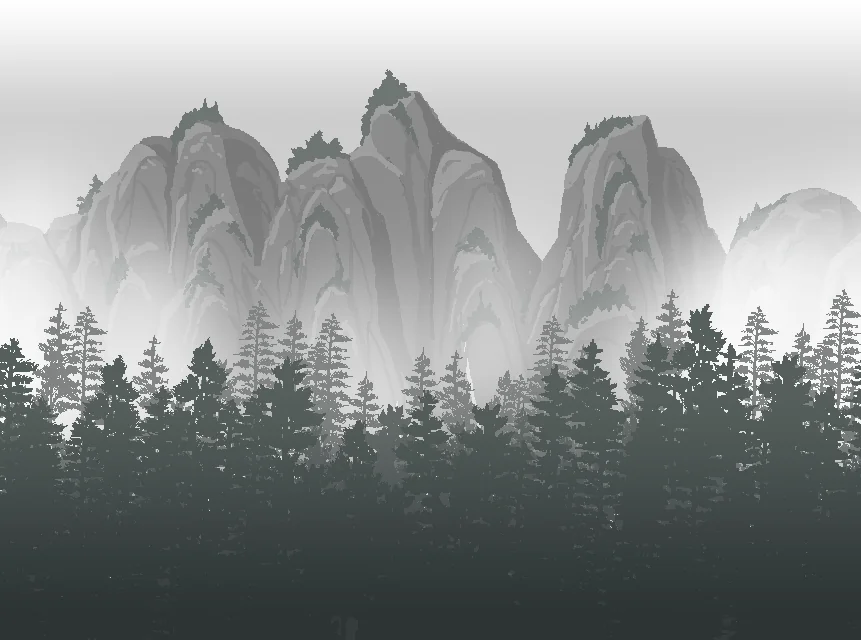

第一代
秘境

秘境 ·
待入
背包
当前弟子
炼气期
进入秘境
快进 12 秒
提前交接传承
背包 · 经络图
收起 ▾
全部卸下
一键穿上所有提升
分解无提升
掉落
素材
0
自动分解低于
不分解
精良
史诗
传奇
只看有提升
按提升
按品质
按部位
功法
法宝
当前历练弟子
收起 ▾
外出历练
境
宗
宗门 ·
小宗门
宗门
史册
生平
宗门
传承
均衡
武器
小件
速度
品质
给赠
传承池
荣誉
0
弟子名册
锻造部
素材
0
训话 ·
门装模板
（弟子出去后按这个挑装备）
擂台战报
历代弟子
境
宗
你不在的时候
知道了